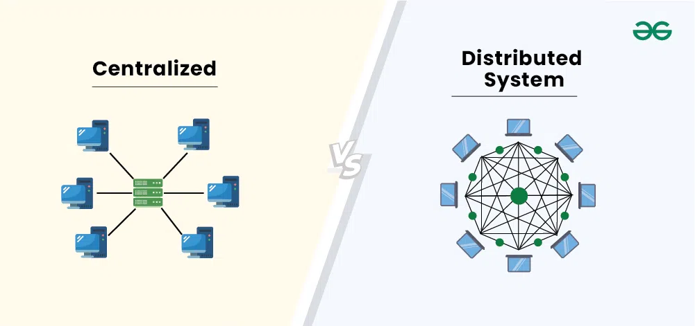

Intro to Relational Databases
Data Analysis With SQL
Karen Hovhannisyan
2026-01-15
What is a Database
A database is a collection of stored data, organized in tables of rows and columns, and managed by a database management system (DBMS).
Analysts use “database” to refer collectively to:
- The stored data
- The DBMS
- The related tools used to access and manipulate that data
Tables, Rows, Columns
A table consists of:
- Rows: represent entities
- Columns: represent attributes
- Cells: intersection of row × column containing a single data element
A data element may be:
- Numeric
- Text
- Or any other data type supported by the DBMS
Example Table
| Col A | Col B | Col C | |
|---|---|---|---|
| Row 1 | A1 | B1 | C1 |
| Row 2 | A2 | B2 (Cell) | C2 |
| Row 3 | A3 | B3 | C3 |
Why This Structure Matters
- Predictable row–column structure
- Each column has a predefined data type
- Ensures data quality and consistency
- Enables efficient search, filtering, and querying
- Forms the foundation of SQL
Spreadsheets vs Databases
| Feature | Spreadsheet | Database |
|---|---|---|
| User Access | Single-user | Multi-user, concurrent access |
| Data Capacity | Limited (thousands to ~1M rows) | Massive (millions to billions of records) |
| Performance | Loads entire file into memory | Retrieves only required data |
| Data Operations | Basic to moderate | Basic to highly complex (joins, aggregations) |
| Querying | Manual filtering/sorting | SQL queries, fast and optimized |
| Scalability | Low | High (vertical & horizontal scaling) |
| Reliability | Prone to errors and file corruption | ACID-compliant, transaction-safe |
| Collaboration | Difficult; conflicts possible | Seamless concurrent usage |
| Automation | Limited | High; integrates with scripts and applications |
| Data Integrity | Minimal enforcement | Strong data types, constraints, relationships |
Example Actor Table
| actor_id | first_name | last_name | last_update |
|---|---|---|---|
| 1 | Penelope | Guiness | 2013-05-26 14:47:57.62 |
| 2 | Nick | Wahlberg | 2013-05-26 14:47:57.62 |
| 3 | Ed | Chase | 2013-05-26 14:47:57.62 |
| 4 | Jennifer | Davis | 2013-05-26 14:47:57.62 |
| 5 | Johnny | Lollobrigida | 2013-05-26 14:47:57.62 |
- Filter
first_name = 'Ed'manually
- Count filtered rows manually
- Slow and memory-heavy with large data
- Only one query at a time
\[\downarrow\]
Structured vs Unstructured vs Semi-Structured Data
To understand database types, we must first distinguish how data can be organized. There are three major categories:
- Structured data
- Unstructured data
- Semi-structured data
Structured Data
Highly organized and stored in a tabular format.
Characteristics:
- Rows represent entities
- Columns represent attributes
- Every cell contains a single value
- Each column has a predefined data type (TEXT, INTEGER, NUMERIC, etc.)
Example:
| actor_id | first_name | last_name | last_update |
|---|---|---|---|
| 1 | Penelope | Guiness | 2013-05-26 14:47:57.62 |
| 2 | Nick | Wahlberg | 2013-05-26 14:47:57.62 |
| 3 | Ed | Chase | 2013-05-26 14:47:57.62 |
| 4 | Jennifer | Davis | 2013-05-26 14:47:57.62 |
| 5 | Johnny | Lollobrigida | 2013-05-26 14:47:57.62 |
Unstructured Data
Data with no fixed model, no rows, no columns.
Examples:
- Emails
- PDFs
- Text documents
- Images, graphics
- Videos, audio
- Social media posts
Properties:
- Harder to search and process
- Requires specialized tools
- Often free-form and unpredictable
Semi-Structured Data
Data that is not tabular, yet still contains organizational markers.
Examples:
- HTML
- JSON
- XML
- Log files
- Key–value records
Properties:
- More flexible than structured
- More organized than unstructured
- Structure is embedded through tags, nesting, or key–value rules
Example (JSON):
Structured
Unstructured
Semi-Structured
Centralized VS Distributed
